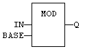
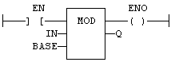

Function
Calculation of modulo.
|
Name |
Type |
Description |
|
IN |
DINT/REAL/LREAL |
Input value. |
|
BASE |
DINT/REAL/LREAL |
Base of the modulo. |
|
Name |
Type |
Description |
|
Q |
DINT/REAL/LREAL |
Modulo: rest of the integer division (IN / BASE). |
In LD, the input rung (EN) enables the operation, and the output rung keeps the state of the input rung. In IL, the first input must be loaded before the function call. The second input is the operand of the function.
Q := MOD (IN, BASE);

The comparison is executed only if EN is
TRUE.
ENO has the same value as EN.
